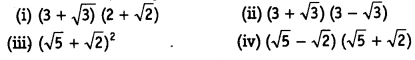

NCERT Solutions for Class 9 Maths Chapter 1 Number Systems Ex 1.1 are part of NCERT Solutions for Class 9 Maths. Here we have given NCERT Solutions for Class 9 Maths Chapter 1 Number Systems Ex 1.1.
NCERT Solutions for Class 9 Maths Chapter 1 Number Systems Ex 1.1
Ex 1.1 Class 9 Maths Question 1.
Is zero a rational number? Can you write it in the form \(\frac { p }{ q }\),where p and q are integers and q ≠0?
Solution:
Yes, zero is a rational number it can be written in the form \(\frac { p }{ q }\).
0 = \(\frac { 0 }{ 1 }\) = \(\frac { 0 }{ 2 }\) = \(\frac { 0 }{ 3 }\) etc. denominator q can also be taken as negative integer.
Ex 1.1 Class 9 Maths Question 2.
Find six rational numbers between 3 and 4.
Solution:
Let qi be the rational number between 3
and 4, where j = 1 to 6.
∴ Six rational numbers are as follows:
Thus, the six rational numbers between 3 and 4 are
Ex 1.1 Class 9 Maths Question 3.
Find five rational numbers between \(\frac { 3 }{ 5 }\) and \(\frac { 4 }{ 5 }\).
Solution:
Since, we need to find five rational numbers, therefore, multiply numerator and denominator by 6.
Ex 1.1 Class 9 Maths Question 4.
State whether the following statements are true or false. Give reasons for your answers.
(i) Every natural number is a whole number.
(ii) Every integer is a whole number.
(iii) Every rational number is a whole number.
Solution:
(i) True
∵ The collection of all natural numbers and 0 is called whole numbers.
(ii) False
∵ Negative integers are not whole numbers.
(iii) False
∵ Rational numbers are of the form p/q, q ≠ 0 and q does not divide p completely that are not whole numbers.
NCERT Solutions for Class 9 Maths Chapter 1 Number systems (Hindi Medium) Ex1.1


NCERT Solutions for Class 9 Maths Chapter 1 Number Systems Ex 1.2
Ex 1.2 Class 9 Maths Question 1.
State whether the following statements are true or false. Justify your answers.
(i) Every irrational number is a real number.
(ii) Every point on the number line is of the form √m , where m is a natural number.
(iii) Every real number is an irrational number.
Solution:
(i) True
Because all rational numbers and all irrational numbers form the group (collection) of real numbers.
(ii) False
Because negative numbers cannot be the square root of any natural number.
(iii) False
Because rational numbers are also a part of real numbers.
Ex 1.2 Class 9 Maths Question 2.
Are the square roots of all positive integers irrational? If not, give an example of the square root of a number that is a rational number.
Solution:
No, if we take a positive integer, say 9, its square root is 3, which is a rational number.
Ex 1.2 Class 9 Maths Question 3.
Show how √5 can be represented on the number line.
Solution:
Draw a number line and take point O and A on it such that OA = 1 unit. Draw BA ⊥ OA as BA = 1 unit. Join OB = √2 units.
Now draw BB1 ⊥ OB such that BB1 =1 unit. Join OB1 = √3 units.
Next, draw B1B2⊥ OB1such that B1B2 = 1 unit.
Join OB2 = units.
Again draw B2B3 ⊥OB2 such that B2B3 = 1 unit.
Join OB3 = √5 units.
Take O as centre and OB3 as radius, draw an arc which cuts the number line at D.
Point D
represents √5 on the number line.
Ex 1.2 Class 9 Maths Question 4.
Take a large sheet of paper and construct the ‘square root spiral’ in the following fashion. Start with a point O and draw a line segment OP1, of unit lengths Draw a line segment P1, P2 perpendicular to OP1 of unit length (see figure). Now, draw a line segment P2P3 perpendicular to OP2. Then draw a line segment P3P4 perpendicular to OP3. Continuing in this manner, you can get the line segment Pn-1 Pn by drawing a line segment of unit length perpendicular to OPn – 1. In this manner, you will have created the points P2, P3,…… Pn,….. and joined them to create a beautiful spiral depicting √2,√3,√4,……
Solution:
Do it yourself.
NCERT Solutions for Class 9 Maths Chapter 1 Number Systems Ex 1.3
Ex 1.3 Class 9 Maths Question 1.
Write the following in decimal form and say what kind of decimal expansion each has
Solution:
(i) We have, \(\frac { 36 }{ 100 }\) = 0.36
Thus, the decimal expansion of \(\frac { 36 }{ 100 }\) is terminating.
(ii) Dividing 1 by 11, we have
Thus, the decimal expansion of \(\frac { 1 }{ 11 }\) is non-terminating repeating.
(iii) We have, 4\(\frac { 1 }{ 8 }\) = \(\frac { 33 }{ 8 }\)
Dividing 33 by 8, we get
∴ 4\(\frac { 1 }{ 8 }\) = 4.125. Thus, the decimal expansion of 4\(\frac { 1 }{ 8 }\) is terminating.
(iv) Dividing 3 by 13, we get
Here, the repeating block of digits is 230769
∴ \(\frac { 3 }{ 13 }\) = 0.23076923… = 0.\(\bar { 230769 }\)
Thus, the decimal expansion of \(\frac { 3 }{ 13 }\) is non-terminating repeating.
(v) Dividing 2 by 11, we get

Here, the repeating block of digits is 18.
∴ \(\frac { 2 }{ 11 }\) = 0.1818… = 0.\(\bar { 18 }\)
Thus, the decimal expansion of \(\frac { 2 }{ 11 }\) is non-terminating repeating.
(vi) Dividing 329 by 400, we get

∴ \(\frac { 329 }{ 400 }\) = 0.8225. Thus, the decimal expansion of \(\frac { 329 }{ 400 }\) is terminating.
Ex 1.3 Class 9 Maths Question 2.
You know that \(\frac { 1 }{ 7 }\) = \(\bar { 0.142857 }\). Can you predict what the decimal expansions of \(\frac { 2 }{ 7 }\) , \(\frac { 13 }{ 7 }\) , \(\frac { 4 }{ 7 }\) , \(\frac { 5 }{ 7 }\) , \(\frac { 6 }{ 7 }\) are , without actually doing the long division? If so, how?
Solution:
We are given that \(\frac { 1 }{ 7 }\) = \(\bar { 0.142857 }\).
∴ \(\frac { 2 }{ 7 }\) = 2 x \(\frac { 1 }{ 7 }\) = 2 x (\(\bar { 0.142857 }\)) =\(\bar { 0.285714 }\)
\(\frac { 3 }{ 7 }\) = 3 x \(\frac { 1 }{ 7 }\) = 3 x (\(\bar { 0.142857 }\)) = \(\bar { 0.428571 }\)
\(\frac { 4 }{ 7 }\) = 4 x \(\frac { 1 }{ 7 }\) = 4 x (\(\bar { 0.142857 }\)) = \(\bar { 0.571 428 }\)
\(\frac { 5 }{ 7 }\) = 5 x \(\frac { 1 }{ 7 }\) = 5 x(\(\bar { 0.142857 }\)) = \(\bar { 0.714285 }\)
\(\frac { 6 }{ 7 }\) = 6 x \(\frac { 1 }{ 7 }\) = 6 x (\(\bar { 0.142857 }\)) = \(\bar { 0.8571 42 }\)
Thus, without actually doing the long division we can predict the decimal expansions of the given rational numbers.
Ex 1.3 Class 9 Maths Question 3.
Express the following in the form \(\frac { p }{ q }\) where p and q are integers and q ≠ 0.
(i) 0.\(\bar { 6 }\)
(ii) 0.4\(\bar { 7 }\)
(iii) 0.\(\overline { 001 }\)
Solution:
(i) Let x = 0.\(\bar { 6 }\) = 0.6666… … (1)
As there is only one repeating digit,
multiplying (1) by 10 on both sides, we get
10x = 6.6666… … (2)
Subtracting (1) from (2), we get
10x – x = 6.6666… -0.6666…
⇒ 9x = 6 ⇒ x = \(\frac { 6 }{ 9 }\) = \(\frac { 2 }{ 3 }\)
Thus, 0.\(\bar { 6 }\) = \(\frac { 2 }{ 3 }\)
(ii) Let x = 0.4\(\bar { 7 }\) = 0.4777… … (1)
As there is only one repeating digit, multiplying (1) by lo on both sides, we get
10x = 4.777
Subtracting (1) from (2), we get
10x – x = 4.777…… – 0.4777…….
⇒ 9x = 4.3 ⇒ x = \(\frac { 43 }{ 90 }\)
Thus, 0.4\(\bar { 7 }\) = \(\frac { 43 }{ 90 }\)
(iii) Let x = 0.\(\overline { 001 }\) = 0.001001… … (1)
As there are 3 repeating digits,
multiplying (1) by 1000 on both sides, we get
1000x = 1.001001 … (2)
Subtacting (1) from (2), we get
1000x – x = (1.001…) – (0.001…)
⇒ 999x = 1 ⇒ x = \(\frac { 1 }{ 999 }\)
Thus, 0.\(\overline { 001 }\) = \(\frac { 1 }{ 999 }\)
Ex 1.3 Class 9 Maths Question 4.
Express 0.99999… in the form \(\frac { p }{ q }\)Are you surprised by your answer? With your teacher and classmates discuss why the answer makes sense.
Solution:
Let x = 0.99999….. …. (i)
As there is only one repeating digit,
multiplying (i) by 10 on both sides, we get
10x = 9.9999 … (ii)
Subtracting (i) from (ii), we get
10x – x = (99999 ) — (0.9999 )
⇒ 9x = 9 ⇒ x = \(\frac { 9 }{ 9 }\) = 1
Thus, 0.9999 =1
As 0.9999… goes on forever, there is no such a big difference between 1 and 0.9999
Hence, both are equal.
Ex 1.3 Class 9 Maths Question 5.
What can the maximum number of digits be in the repeating block of digits in the decimal expansion of \(\frac { 1 }{ 17 }\)? Perform the division to check your answer.
Solution:
In \(\frac { 1 }{ 17 }\), In the divisor is 17.
Since, the number of entries in the repeating block of digits is less than the divisor, then the maximum number of digits in the repeating block is 16.
Dividing 1 by 17, we have

The remainder I is the same digit from which we started the division.
∴ \(\frac { 1 }{ 17 }\) = 0.\(\overline { 0588235294117647 }\)
Thus, there are 16 digits in the repeating block in the decimal expansion of \(\frac { 1 }{ 17 }\).
Hence, our answer is verified.
Ex 1.3 Class 9 Maths Question 6.
Look at several examples of rational numbers in the form \(\frac { p }{ q }\) (q ≠ 0). Where, p and q are integers with no common factors other that 1 and having terminating decimal representations (expansions). Can you guess what property q must satisfy?
Solution:
Let us look decimal expansion of the following terminating rational numbers:
We observe that the prime factorisation of q (i.e. denominator) has only powers of 2 or powers of 5 or powers of both.
Ex 1.3 Class 9 Maths Question 7.
Write three numbers whose decimal expansions are non-terminating non-recurring.
Solution:
√2 = 1.414213562 ………..
√3 = 1.732050808 …….
√5 = 2.23606797 …….
Ex 1.3 Class 9 Maths Question 8.
Find three different irrational numbers between the rational numbers \(\frac { 5 }{ 7 }\) and \(\frac { 9 }{ 11 }\) .
Solution:
We have,
Three irrational numbers between 0.\(\overline { 714285 }\) and 0.\(\overline { 81 }\) are
(i) 0.750750075000 …..
(ii) 0.767076700767000 ……
(iii) 0.78080078008000 ……
Ex 1.3 Class 9 Maths Question 9.
Classify the following numbers as rational or irrational
(i) \(\sqrt { 23 }\)
(ii) \(\sqrt { 225 }\)
(iii) 0.3796
(iv) 7.478478…..
(v) 1.101001000100001………
Solution:
(1) ∵ 23 is not a perfect square.
∴ \(\sqrt { 23 }\) is an irrational number.
(ii) ∵ 225 = 15 x 15 = 152
∴ 225 is a perfect square.
Thus, \(\sqrt { 225 }\) is a rational number.
(iii) ∵ 0.3796 is a terminating decimal.
∴ It is a rational number.
(iv) 7.478478… = 7.\(\overline { 478 }\)
Since, 7.\(\overline { 478 }\) is a non-terminating recurring (repeating) decimal.
∴ It is a rational number.
(v) Since, 1.101001000100001… is a non terminating, non-repeating decimal number.
∴ It is an irrational number.
NCERT Solutions for Class 9 Maths Chapter 1 Number Systems Ex 1.4
Ex 1.4 Class 9 Maths Question 1.
Visualise 3.765 on the number line, using successive magnification.
Solution:
3.765 lies between 3 and 4.
Ex 1.4 Class 9 Maths Question 2.
Visualise 4.\(\bar { 26 }\) on the number line, upto 4 decimal places.
Solution:
4.\(\bar { 26 }\) or 4.2626 lies between 4 and 5.
NCERT Solutions for Class 9 Maths Chapter 1 Number Systems Ex 1.5
Ex 1.5 Class 9 Maths Question 1.
Classify the following numbers as rational or irrational.
Solution:
(i) Since, it is a difference of a rational and an irrational number.
∴ 2 – √5 is an irrational number.
(ii) 3 + \( \sqrt{23} \) – \( \sqrt{23} \) = 3 + \( \sqrt{23} \) – \( \sqrt{23} \) = 3
which is a rational number.
(iii) Since, \(\frac { 2\sqrt { 7 } }{ 7\sqrt { 7 } }\) = \(\frac { 2\times\sqrt { 7 } }{ 7\times\sqrt { 7 } }\) = \(\frac { 2 }{ 7 }\) , which is a rational number.
(iv) ∵ The quotient of rational and irrational number is an irrational number.
∴ \(\frac { 1 }{ \sqrt { 2 } }\) is an irrational number.
(v) ∵ 2π = 2 x π = Product of a rational and an irrational number is an irrational number.
∴ 2π is an irrational number.
Ex 1.5 Class 9 Maths Question 2.
Simplify each of the following expressions

Solution:
(i) (3 + √3)(2 + √2)
= 2(3 + √3) + √2(3 + √3)
= 6 + 2√3 + 3√2 + √6
Thus, (3 + √3)(2 + √2) = 6 + 2√3 + 3√2 + √6
(ii) (3 + √3)(3 – √3) = (3)2 – (√3)2
= 9 – 3 = 6
Thus, (3 + √3)(3 – √3) = 6
(iii) (√5 + √2)2 = (√5)2 + (√2)2 + 2(√5)(√2)
= 5 + 2 + 2√10 = 7 + 2√10
Thus, (√5 + √2 )2 = 7 + 2√10
(iv) (√5 – √2)(√5 + √2) = (√5)2 – (√2)2 = 5 – 2 = 3
Thus, (√5 – √2) (√5 + √2) = 3
Ex 1.5 Class 9 Maths Question 3.
Recall, π is defined as the ratio of the circumference (say c) of a circle to its diameter (say d). That is π = \(\frac { c }{ d }\). This seems to contradict the fact that n is irrational. How will you resolve this contradiction?
Solution:
When we measure the length of a line with a scale or with any other device, we only get an approximate ational value, i.e. c and d both are irrational.
∴ \(\frac { c }{ d }\) is irrational and hence π is irrational.
Thus, there is no contradiction in saying that it is irrational.
Ex 1.5 Class 9 Maths Question 4.
Represent \( \sqrt{9.3} \) on the number line.
Solution:
Draw a line segment AB = 9.3 units and extend it to C such that BC = 1 unit.
Find mid point of AC and mark it as O.
Draw a semicircle taking O as centre and AO as radius. Draw BD ⊥ AC.
Draw an arc taking B as centre and BD as radius meeting AC produced at E such that BE = BD = \(\sqrt { 9.3 }\) units.
Ex 1.5 Class 9 Maths Question 5.
Rationalise the denominator of the following
Solution:
NCERT Solutions for Class 9 Maths Chapter 1 Number Systems Ex 1.6
Ex 1.6 Class 9 Maths Question 1.
Find:
Solution:
(i) 64 = 8 x 8 = 82
∴ (64)1/2 = (82)1/2 = 82 x 1/2 = 8 [(am)n = am x n]
(ii) 32 = 2 x 2x 2 x 2 x 2 = 25
∴ (32)1/5= (25)1/5= 25 x 1/5 = 2 [(am)n= am x n]
(iii) 125 = 5 x 5 x 5 = 53
∴ (125)1/3 = (53)1/3 = 53 x 1/3 = 5 [(am)n = am x n]
Ex 1.6 Class 9 Maths Question 2.
Find:
Solution:
(i) 9 = 3 x 3 = 32
∴ (9)3/2= (32)3/2 = 32 x 3/2 = 33 = 27
[(am)n = amn]
(ii) 32 = 2 x 2 x 2 x 2 x 2= 25
∴ (32)2/5 = (25)2/5 = 25 x 2/5 = 22 = 4
[(am)n = amn]
(iii) 16 = 2 x 2 x 2 x 2 = 24
∴ (16)3/4 = (24)3/4 = 24 x 3/4 = 23 = 8
[(am)n = amn]
(iv) 125 = 5 x 5 x 5 = 53
∴ (125)-1/3 = (53)-1/3 = 53 x (-1/3) = 5-1
= \(\frac { 1 }{ 5 }\) [ a-n \(\frac { 1 }{ { a }^{ n } }\) ]
Ex 1.6 Class 9 Maths Question 3.
Simplify:
Solution:
(i) 22/3. 21/5 = 22/3 + 1/5 = 213/15
[am. an = am + n
(iv) 71/2.81/2 = (7 x 8)1/2 = (56)1/2 [am x bm = (ab)m]
NCERT Solutions for Class 9 Maths
- Chapter 1 Number systems
- Chapter 2 Polynomials
- Chapter 3 Coordinate Geometry
- Chapter 4 Linear Equations in Two Variables
- Chapter 5 Introduction to Euclid Geometry
- Chapter 6 Lines and Angles
- Chapter 7 Triangles
- Chapter 8 Quadrilaterals
- Chapter 9 Areas of Parallelograms and Triangles
- Chapter 10 Circles
- Chapter 11 Constructions
- Chapter 12 Heron’s Formula
- Chapter 13 Surface Areas and Volumes
- Chapter 14 Statistics
- Chapter 15 Probability
- Class 9 Maths (Download PDF)
We hope the NCERT Solutions for Class 9 Maths Chapter 1 Number Systems Ex 1.1, help you. If you have any query regarding NCERT Solutions for Class 9 Maths Chapter 1 Number Systems Ex 1.1, drop a comment below and we will get back to you at the earliest.